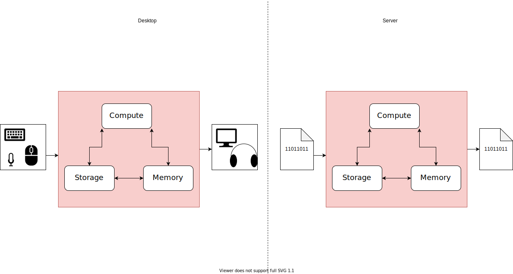

8 Administering a Linux Server
Now that you’ve got a Linux server and you’re able to log in, it’s time to get acquainted with your server, learn how to move around, and start getting some things done.
There are two big differences between your laptop and a Linux server that you’ll have to get used to. The first is that servers generally do not have graphical user interfaces (GUIs) for doing administrative tasks. If you want to adjust the system settings on your laptop or navigate from directory to directory, you can click through a file tree or open up your preferences pane. For the most case, all interaction you’re going to have with your server is going to be via the command line. It’s easier than you might think if you’ve never done it before, but it’ll take a little learning.

The second difference is that the server we set up runs Linux – as do the overwhelming majority of the world’s servers. If you’re interacting with the command line, the differences between Linux and other operating systems (especially MacOS) aren’t huge, but there’s a little learning involved.
In order to get started, this section is going to be around navigating in Linux and learning how to do some basic administrative tasks. There are entire books written about Linux System Administration. Pick up one of those if you’re curious.
8.1 A little about Linux
Every computer in the world runs on an operating system. The operating system defines the way that applications – like Microsoft Word, RStudio, and Minecraft – can interact with the underlying hardware. They define how files are stored and accessed, how applications are installed and can connect to networks, and more.
TODO: Image of hardware, operating system, applications
Back in the early days of computing, basically every computer manufacturer created its own operating system that was super-tightly linked to the hardware. These days, there are only a few operating systems that most systems use.
For desktop and laptop computers, there’s Windows, MacOS, and Linux; Windows and Linux for servers, and Android (actually a flavor of Linux) and iOS for phones and tablets.1
The 1960s were a wild time for operating systems. Basically every computer company invented their own operating system for their machines. In the early 1970s, AT&T labs released a proprietary operating system called Unix.
Unix espoused a philosophy of small system-level programs that could be chained together to do more complex things. It turned out that this philosophy made a lot of sense, and starting in the early 1980s, a variety of Unix-like operating systems were released. Unix-like operating systems were clones – they behaved like Unix, but didn’t actually include any code from Unix (because it was proprietary).
This philosophy, called piping, should feel extremely familiar to you if you’re an R user. The tidyverse pipe %>% and the base R pipe introduced in R 4.1 |> are both directly inspired by the Unix/Linux pipe |.
Linux is the most successful of those clones, an open source Unix-like operating system released in 1991 by software engineer Linus Torvalds.2 Another of those clones was the predecessor to what is now MacOS.
A difference you’ve probably experienced before between Unix-like systems and Windows, which is not Unix-like is the type of slashes used in file paths. Unix-like systems use forward slashes /, while Windows uses back slashes \.
A huge majority of the world’s servers run on Linux. There are meaningful Windows server deployments in some enterprises, but it’s relatively small compared to the install base of Linux servers. Along with most of the world’s servers, almost all of the world’s embedded computers – in ATMs, cars and planes, TVs, and most other gadgets and gizmos – run on Linux. If you have an Android phone or a Chromebook – that’s Linux. Basically all of the world’s supercomputers use Linux.
As you might imagine, the profusion of Linux in all different kinds of systems similarly necessitates different kinds of Linux. The Linux you’re going to run on a server that’s designed to be a data science workbench is going to be very different from the version of Linux running in your car or on your phone.
There are many different distributions (usually called “distros”) of Linux, for desktop, server, and other applications.
There are a few main distros you’re likely to run across on servers in your organization – Ubuntu, Red Hat Enterprise Linux (RHEL), Amazon Linux 2, and SUSE (pronunced soo-suh).3
8.2 A tiny intro to Linux administration
Being a competent Linux admin is a career unto itself. So we’re not going to try to get you there in this chapter. Instead, the goal of this chapter is going to be to get you familiar with the basic tasks of interacting with a Linux server and the tools you need to at least get started working on one.
When you log into a Linux server, you’ll be interacting exclusively via the command line, so all of the commands in this chapter are going to be terminal commands. If you haven’t yet figured out how to open the terminal on your laptop and got it themed and customized so it’s perfect, I’d advise going back to Chapter 2-2 on the command line.
It’s also worth mentioning that if you’re using a Mac, many of these same tools and techniques will work out of the box and may be useful on your laptop. If you’re running Windows, you may have to look up the exact commands and syntax – but the general idea will hold.
In just a second, we’ll get into how to administer a Linux server, but let’s first talk about what are the main tasks of Linux administration:
Moving around and file operations A lot of the things you’ll do administering a server are just moving around, looking at different files, and interacting with them. We’ll spend some time on how to move around on the command line and how to interact with files.
Managing who can do what In general, if you’re running a server, you’re going to be managing a number of different users on the server. Creating users and groups and managing them – specifically the things they’re allowed to do is a huge part of server administration, and we’ll go over what you’ll need to do and how.
Managing resources As a server admin, especially in the cloud, you’ve got the ability to manage the resources – CPU, RAM, and memory – available to you. Keeping track of how much you’ve got of these things, how they’re being used, and making sure everyone is playing nice together with the shared resources is an important task.
Networking Because your server is only valuable if you and others can connect to it, managing how your server can connect to the environment around it is an important part of Linux administration.
Below, I’m intentionally mixing up bash commands and Linux system commands because they’re useful. If you know the difference and are pedantic enough to care, this list isn’t for you anyway.
The first thing that’s important to understand is that once you’ve SSH-ed into another server, your terminal is like a little window into that server. So everything that runs in the terminal is actually running on that other server and just bringing the results back to your eyes. But if you want to – for example – actually move a file from place to place, you’ll need to do something else.
Now we’ll get into some of these topics. Each section will introduce several concepts and the commands you can use to accomplish those things. I’ll include a table of the commands mentioned. At the end of the book, there’s a cheatsheet section that combines all of these commands.
8.3 The filesystem, files, and editing text
In the last chapter, you SSH-ed into your server using the pem key that was granted to you when you created the server. When you got there, you got dumped into the command line. So the first step is understanding where you are and how to go elsewhere.
The first thing to understand in Linux is that commands always happen in a particular place – called the working directory – and as a particular user. Depending on who you are and where you are, the commands you’re allowed to run and what happens when you do so might be different. It’s worth noting that this is also true on your laptop, but the experience of clicking on and using apps obfuscates the fact that this is happening under the hood.
When you land using the pem key, you’ve logged in as the root user and you’re at the file path root.
At any time, you can get the path where you’re sitting with the pwd command, which is an abbreviation for print working directory.
On a Linux server, you can think of the entire file system as a tree (for me an upside-down tree resonates more, since we generally talk about going “down” the tree to get to branches). The root of this tree is at /, and every file, folder, directory, and app is somewhere down the tree from /.
If you’re a Windows person, you might think this is analogous to C: – it is, but only sorta.
You’re right that the root of your drive is at C: and other things are descended from there.
Unlike in Linux, in Windows you can have multiple roots, one for each physical or logical disk you’ve got. That’s why your machine may have a D: drive, or if you have network shares, those will often be on M: or N: or P:, each with its own sub-tree.
In Linux, everything is a subtree below /, and it has nothing to do with the drives that house each of them. If you do have extra drives mounted to your Linux server, /mnt (short for mount) is a popular place to put them.
In addition to being the root of the file tree, / is used to separate directories and files, so for example /opt/R is the directory (or file) called R inside the opt directory, which is inside /.
Whenever you’re locating a directory or file, you can do so using either absolute or relative file paths. An absolute file path is the location of a file relative to the file root, /, while a relative file path is the path relative to the spot where you are right now.
When you’re writing out a file path, you can also explicitly access the working directory using .. In the last chapter, we talked about the ls command, which lists what’s in the working directory. Now, you understand that ls just has a default argument of ., so ls and ls . do exactly the same thing.
So an absolute (sometime called fully-qualified) path always starts with / and might look something like /home/alex/. So regardless of what your working directory is, ls /home/alex will always show the contents of /home/alex.
A relative path starts from your working directory. So I can run ls alex, and that will look for a directory named alex on the next rung down the tree from where I am and list its contents, if it exists. So if I’m in /home, ls alex will return the same thing as ls /home/alex, but otherwise it will return something else.
If you ever want to explicitly indicate your working directory in a file path, you can do so with ., so ls ./alex is the same as ls alex.
Sometimes absolute file paths make more sense, and sometimes relative paths do. In general, absolute file paths make more sense when you want to access the exact same resource from multiple places, and relative file paths make more sense when you want to access the same resource that might exist in different places.
Once you’ve looked around, you’ll have to move somewhere – you can change your working directory with the cd command, short for change directory.
There are a few directories with special names, aside from the root /. Your current working directory is always at ., and the parent of your current directory is at .., so you can move to the parent of your current directory using cd .. and up two levels with cd ../...
We’ll get more into users below, but if your user has a home directory, that home directory is at ~.
|
Command |
What it does/is |
Helpful options |
Example |
|---|---|---|---|
|
|
system root |
||
|
|
current working directory |
||
|
|
list objects in a directory |
|
|
|
|
prints working directory |
|
|
|
|
change directory |
|
|
|
|
home directory of the current user |
|
8.3.1 Reading text files
On a Linux system, almost everything is either a text file or an executable. That means that configuration files and logs are just text files, and so you can interact with them all the same way.
A very common pattern in Linux administration is to read a log file to look for errors or clues, adjust a configuration setting as a result, and then restart a process.
You’ll find that your skills in understanding the Linux file tree, moving around, and seeing what’s in directories will be very helpful in getting to the files. Once you’re there, it’ll be useful to know how to actually interact with files.
Probably the commands you’ll use most often will be cat and tail. cat is the command to print a file, starting at the beginning. It’s often helpful to read through text files. Sometimes you’ve got a really big file and you want to see the first few rows (especially useful if it’s a csv). In that case, less can be handy because it opens large files much faster.
tail skips right to the end of a file. This is most useful when you’re reading log files where the newest information is at the end. Log files usually are written so the newest part is last. So much so that tailing a log file is a synonym for looking at it.
If you want to get a live view of a log file that will update as more is written, use the -f flag (for follow).
If you’ve used regex, you’ll be familiar with the power of grep – a tool for using regex search. grep searches for and returns results that match the pattern you specify. Using grep well requires being quite proficient in regex, so I usually just use it for simple searches.
The true power of grep is unlocked in combination with the pipe. In Linux, the pipe operator – | – takes the output of the previous command and sends it into the next one. This kind of work will be very familiar to anyone who’s used the tidyverse in R, which was directly inspired by the Linux pipe.
So, for example, a combination I do all the time is to pipe the output of ls into grep when searching for a file inside a directory. So if I was searching for a file that contained the word data somewhere in the filename inside a specific project directory, that might look something like ls ~/projects/my-project | grep data.
|
Command |
What it does |
Notes + Helpful options |
|---|---|---|
|
|
Prints a file. |
|
|
|
Prints a file, but just a little. |
Can be very helpful to look at a few rows of csv.
Only reads what youre looking at, so can be much faster than |
|
|
Look at the end of a file. |
Log files usually are written so the newest part is last. So much so that tailing a log file is a synonym for looking at it.
If you want to get a live view of a log file that will update as more is written, use the |
|
|
Search a file using regex. |
Useful to search inside a file, but youve gotta write regex. I suggest testing expressions on regex101.com. Often useful in combination with the pipe. |
|
|
the pipe |
8.3.2 Deleting and Moving Files
There will be times when you have to copy, move, or remove files – each of these things can be accomplished with commands that are similarly abbreviated forms of the relevant words – cp, mv, and rm.
Be very careful with the rm command.
Unlike on your desktop there’s no recycle bin! Things that are deleted are instantly deleted forever.
If you want to copy, move, or remove files, the -r flag for recursive is a handy one – if you try to copy, move or remove a directory, you often mean to act on the entire subtree below that directory, which the -r flag indicates.
Similarly, sometimes you want to list everything in a directory. For example, you might want to copy the entire contents of a directory. In that case, the wildcard, *, returns everything in a directory. So cp alex/* alex2 copies the full contents of alex into alex2.
There are times when you want to make files or directories with nothing in them – the touch command makes a blank file at the specified file path, and mkdir makes a directory at the specified filepath. mkdir can be a little finicky about when paths exist and it will only make one level. So mkdir my_dir works, but mkdir my_dir/my_sub_dir does not. Using mkdir -p, it will use existing paths and make whichever parts of the path don’t yet exist.
|
Command |
What it does/is |
Helpful options + Notes |
Example |
|---|---|---|---|
|
|
remove delete permanently! |
|
BE VERY CAREFUL WITH |
|
|
copy |
||
|
|
move |
||
|
|
wildcard |
||
|
|
make directory |
||
|
|
update files timestamp to current time |
Creates file if doesnt already exist. |
8.3.3 Moving things to and from the server
One thing that’s likely to come up almost immediately when you’re working on your server is how to move files to and from the server. There are two main tools you’ll use for this task. The first is the tar command, which allows you to turn a set of files or whole directory into an archive. This is really handy because then moving a whole set of files turns into just moving one archive file. It also does some amount of file compression when it creates the archive file.
Annoyingly, the tar command does both archive creation and extraction, and is almost always used with several other flags. I never remember them – this is a command I google 100% of the time I use it.
Once you’ve created an archive file, you’ve got to move it. The scp command is the way to do this. scp – short for secure copy – is basically a combo of SSH and copy. So you will sometimes use ssh flags like -i to specify a particular SSH key, and you’ll also have to specify file paths.
One thing to remember about scp is that it makes an SSH connection at your request. This means that the other side of the connection needs to be available to receive an inbound request to connect over SSH. This is probably true of your server, but is almost never true of your laptop. So that means that when you’re getting things to or from your server you’ll almost always run the scp command from your laptop’s terminal, not from a terminal that’s already SSH-ed into the server.
|
Command |
What it does |
Notes + Helpful options |
|---|---|---|
|
|
compress/decompress file/directory |
Almost always used with flags that youll have to google. Create is usually
Extract is usually
|
|
|
8.3.4 Writing files - a rough intro to vim
There will be many situations where writing into a text file will be handy while administering your server – for example, when changing config files. When you’re on the command line, you’ll use a command line tool for writing into those files – meaning you’ll navigate inside the file and do file operations completely from the keyboard. No mouse or touchpad!
There are two main tools you’ll probably encounter, nano and vi/vim.4
You can open a file in either by typing nano <filename> or vi <filename>. Once there you’ll be looking at a text file.
Both nano and vim offer extremely powerful text editing tools. It might be worth it for you to spend some time really getting comfortable in one! In this book, we’re just going to talk about the absolute minimum you’ll need to do to avoid getting stuck. Getting stuck in nano or vim is an extremely common situation for a newbie Linux admin. Hopefully once you’ve read this, you’ll at least avoid getting stuck in an editor with no way out.
In nano there will be helpful prompts along the bottom to tell you how to interact with the file, so you’ll see once you’re ready to go, you can exit with ^x. But what is ^? Pressing that key doesn’t seem to have any effect. The ^ caret is short for your control or command key – depending on whether you’re using a Mac or Windows keyboard. Phew!
Where nano gives you helpful hints, vim leaves you all on your own. It doesn’t even tell you you’re inside vim! This is where many people get stuck and end up having to just exit and start a new terminal session. It’s not the end of the world if you do, but a few simple vim commands can help you avoid that fate.
One of the most confusing things about vim is that you can’t edit the file when you first enter. That’s because vim keybindings were (1) developed in a time before all keyboards had arrow keys and (2) were designed to never make you take your hands off the center of the keyboard. When you enter, you’re in “normal” mode in which you can’t actually type anything!
By pressing i, you can enter insert mode – or “the mode where you can actually type stuff”. These days, almost all keyboard have arrow keys and you can navigate using the arrow keys in insert mode.
Once you’re done writing stuff, you can exit to normal mode by pressing the escape key. Once you’re in normal mode, you can do file operations by prefixing commands with a colon :. The two most common commands you’ll use are save (write) and quit. You can combine these together, so you can save and quit in one command using :wq.
Sometimes you may find yourself inside a file having made changes you want to discard. If you try to exit with :q, you’ll again find yourself trapped in and endless loop of warnings that your changes won’t be saved unable to exit. You can tell vim you mean it with the exclamation mark and exit using :q!.
| Command | What it does | Notes + Helpful options |
|---|---|---|
^ |
Prefix for file command in nano editor. |
Use the command or control key. |
i |
Enter insert mode in vim |
|
escape |
Enter normal mode in vim. |
|
:w |
Write the current file in vim (in normal mode) |
Can be combined to save and quit in one, :wq |
:q |
Quit vim (in normal mode) |
:q! quit without saving |
8.4 Managing who can do what
Whenever you’re doing something in Linux, you’re doing that thing as a particular user. An important distinction about Linux users is that they may or may not correspond to an actual human.
In a minute, we’ll create users on your workbench server. These will correspond to actual humans who will use the servers, and they’ll have usernames, passwords, and home directories. But there are many more users than that on a Linux server. On most servers, there will be many service accounts, accounts that represent a particular service but don’t have a password or a home directory. They basically just exist to be holders for permissions.
For example, if you install RStudio Server on your server, there will be a user created called rstudio-server. So, for example, if you go to login to the server, it’s the rstudio-server user who needs permissions to do the relevant mechanics to get you in, like check that you’re a valid user on the system.
A group is a collection of users for the purpose of managing permissions group-wide. Each user has exactly one primary group, and can be a member of zero or more secondary groups.5 By default, each user has their own primary group of the same name as their username.
There’s also an administrative, root, or super user. When you logged in to your server using the pem key, you were logged in as the root user. This is a very dangerous practice, and you should basically never do it, except when you’ve just stood up a fresh server.
Instead, you’ll want to create a user on the system using the adduser command, log in as that actual user, and adopt super user privileges to run particular commands by prefixing them with sudo.
If you think back a little, this is one of the most common reasons for being in a file, having made edits, and being unable to exit. Your user very well may have read privileges, but not write. So you could get in and muck around, but when you went to save, you can’t! Exiting with :q! and reopening with sudo vim is your best bet.
You can change your user’s password at any time with passwd and you can check the user you are with whoami or id.
| Command | What it does | Helpful options | Example |
|---|---|---|---|
sudo |
Adopt super user permissions. | ||
su <username> |
Change to be a different user. | ||
whoami / id |
Check the current user. | id gives more information, but is less catchy. |
|
passwd |
Change password. | ||
useradd |
Add a new user. |
8.4.1 File Permissions
Every object in Linux is just a file. Every log – file. Every picture – file. Every program – file. So with a pretty simple set of permissions, you can assign what everyone on the system is allowed to do.
The question of who’s allowed to do what – authorization – is an extremely deep one. There’s a chapter all about authorization, how it differs from authentication, and the different ways your IT/Admins might want to manage it later in the book.
This is just going to be a high-level overview of basic Linux authorization.
There are three permissions in Linux: read, write, and execute. For some files execute doesn’t really make sense - what would it mean to execute a csv file? But Linux doesn’t care – you can assign any combination of these three permissions for any file.
Now, how are these permissions assigned?
Each file in Linux belongs to a user and a group. So for each file, read, write, and execute permissions can be set for the user who owns it, the group it belongs to, and everyone else.
To understand better, let’s look at the actual permissions on a file.
If you run ls -l on a directory, you get the list of the files – and the first few columns give you all the information you need to know about the file’s permissions.
So, for example, here’s a few lines of the output of running ls -l on a python project I’ve got.
❯ ls -l
-rw-r--r-- 1 alexkgold staff 28 Oct 30 11:05 config.py
-rw-r--r-- 1 alexkgold staff 2330 May 8 2017 credentials.json
-rw-r--r-- 1 alexkgold staff 1083 May 8 2017 main.py
drwxr-xr-x 33 alexkgold staff 1056 May 24 13:08 testsThe first character indicates the type of file – - for normal and d for a directory.
The next 9 characters are indicators for the three permissions – r for read, a w for write, and a x for execute or - for not – first for the user, then the group, then any other user on the system.
So, for example, my config.py file with permissions of rw-r-r-- indicates the user (alexkgold) can read and write the file, and everyone else – including in the file’s group staff – has read only.
In some cases, you may need to change a file’s permissions. You can do so using the chmod command. For chmod, you indicate permissions with the sum of numbers – 4 for read, 2 for write, and 1 for execute – one number for the user, group, and everyone else. So chmod 765 <filename> would give the user full permissions, read and write to the group, and read and execute to everyone else. This would be a strange set of permissions to give a file, but it’s a perfectly valid chmod command.
If you spend any time administering a Linux server, you almost certainly will at some point finding yourself frustratedly applying chmod 777 to a file to give full permissions to everyone.
I can’t in good faith tell you not to do this – we’ve all been there. But if it’s something important, be sure you change it back once you’re finished figuring out what’s going on.
| Command | What it does | Helpful options + notes |
|---|---|---|
chmod <permissions> <file> |
Modifies permissions on a file. | Number indicates permissions for user, group, others: add 4 for read, 2 for write, 1 for execute, 0 for nothing. |
8.5 Managing server resources
Managing server resources is the third main activity you’ll need to do as a server admin. There are three resources you’ll need to manage – CPU, RAM, and storage space. More on all three of these and how to make sure you’ve got enough later in this section.
For now, we’re just going to go over how to check how much you’ve got, how much you’re using, and getting rid of stuff that’s misbehaving.
For many of these commands, the amount returned can be overwhelming, so you’ll usually use some sort of filtering mechanism. For many of these commands, that means you’ll run it, and send it into a pipe. On the other side of the pipe you might have grep to look for specific files or processes, or head or tail to get the first or last of them. If you want to specify how many, head -n <n> gives you the top n results.
| Command | What it does | Helpful options |
|---|---|---|
head |
Returns the first results from a command. | -n <n> to return the first n results. |
8.5.1 Managing storage
If you’re running low on storage space, or think you might be, there are two things you might try to do – delete some stuff or add a bigger disk. There are two commands – du gives you the size of individual files inside a directory. This can be helpful for finding your largest files or directories if you think you might need to clean up things.
df is the more IT/Admin way of thinking about storage usage – given a file or directory, what device is it mounted on and how full is that device? This can be really helpful if you’re thinking about swapping out for a bigger storage volume.
You’ll almost always use du and df with the -h flag, which puts the numbers in human-readable format.
|
Command |
What it does |
Helpful options |
|---|---|---|
|
|
Check size of files. |
Most likely to be used
|
|
|
Check storage space on device. |
-h |
8.5.2 Running processes
Everything running on a computer is a process. So, for example, running a R session is (usually) one process. Some processes are more complex than others. For example, just running R or Python in your terminal and using the console is just a single process.
But more complex interactions, like running R inside RStudio or Python in Jupyter involves a number of different processes and subprocesses.
Each process has a numeric process id or pid that can be useful for referring to them.
Sometimes these processes take up more than their share of RAM and CPU – the most relevant resources for running processes.
As an admin, you’ll occasionally have to track down rogue processes and shut them down. Shutting down a rogue process is pretty simple – you’ll use the kill command to kill processes once you’ve identified them. The trick is identifying the problematic ones.
Generally, if the system is doing something weird, top is a good first stop. top shows the processes consuming the most system resources in real time. It can help you find the processes that you might need to kill.
If you have a better idea of where troublesome processes might be, ps aux lists processes for all users.6 It’s common to pipe the output into grep to identify processes by names.
| Command | What it does | Helpful options |
|---|---|---|
top |
See what’s running on the system. | |
ps aux |
See all system processes. | The second column is the pid if you want to kill them. |
kill |
Kill a system process. | -9 to force kill |
8.6 Managing networking
The last thing you’ll have to manage on your Linux server is networking. After all, servers are only valuable to the degree they can serve people something! Very often, you’ll experience configuring something on your server, observing it working, and then not being able to get to it…without really understanding why.
In these cases, your first assumption should probably be that there’s an issue with the networking. In another section, we’ll get into the many places networking can be misconfigured, but the first thing to check is whether networking is the issue.
ping and curl are useful tools for checking whether traffic can get into or out of your server. For example, if you’re on your server and struggling to install packages from CRAN or PyPi, a ping to the relevant URL can check whether your request is getting through to those servers at all.
On the flip side, if you can’t log into your server, a ping command from your laptop to your server is a good check of whether you’re correctly configured inbound networking.
Lastly, netstat is a useful command for checking which ports are being used on your machine. If you’ve got a service running, you need to make sure it’s available on a port – and that it’s the right port! netstat can help you check. For this purpose, netstat is most useful with the -tlp flags to show programs that are listening and the programs associated.
|
Command |
What it does |
Helpful Options + Notes |
|---|---|---|
|
|
Checks whether an URL/IP address is reachable. |
|
|
|
Tries to access a specific HTTP endpoint. |
|
|
|
Gives overview of network statistics and ports used on your server. |
Most useful with
|
8.6.1 Practical SSH
Note that you don’t need to use -i assuming you’re using default SSH key name. If you wanted to use a different name, you can use -i to specify it, or you can set up an SSH config so your terminal knows which SSH key to use with which host.
By default, SSH always uses port 22. If for some reason you want to use a different port, you can use the -p flag with your SSH command.
SSH has one of the neatest debugging modes of any command. If you can’t connect via SSH for some reason, just add a -v to your command for verbose mode. If that’s not enough information, add another v for -vv, and even another! Every v you add (up to 3) will make the output more verbose.
There’s one more SSH trick that can be useful – port forwarding, also called tunneling. SSH port forwarding allows you to take the output of a port on a remote server, route it through SSH, and display it as if it were on a local port. What this means, for example, is that you can connect to a server via SSH, and once you’ve set up port forwarding, you can access, for example, port 3939 on the remote server at localhost:3939 from your laptop’s browser.
This can be helpful if you want to access a particular port on the remote server, but you haven’t yet set up public networking to it.
Port forwarding is, unfortunately, difficult to read and you’ll almost certainly have to google every time you use it unless you’re doing so on a daily basis.
For the kind of port forwarding you’ll use in debugging, you’ll use the -L flag. The syntax looks like this:
ssh <local port>:<remote ip>:<remote port> <ssh hostname>
8.7 Lab: Setting up a user, configuring SSH, Installing R, Python, and More
Now that you’ve SSH-ed into your server using the pem key, let’s make things more secure.
The first thing we’re going to do is create a user so that you can login without running as root all the time.
Let’s get started by just running useradd. This will walk us through a set of prompts to create a new user with a home directory and a password. Make sure to give this user sudo privileges. Great!
Now, let’s create an SSH key on your machine. Feel free to accept all the defaults.
You’ll need to scp the key into place on the server – in ~/.ssh/authorized_keys.
Now, login using your user, so it’ll be ssh <username>@<server IPv4 address>.
Now that we’re all set up, you should store the pem key somewhere safe and never use it to log in again.
Now, let’s get RStudio Server, Jupyter Lab, and the associated programming languages up and running.
- R
- Python
- RStudio
- Jupyter
Note that won’t be able to access via HTTP, will have to SSH tunnel into the GUI – we’ll address in the next chapter.
Try standing up a new server and installing R and RStudio Server Open Source, or Python and JupyterHub.
Hint 1: Remember that your instance only allows traffic to SSH in on port
22by default. You access RStudio on port8787by default and JupyterHub on port8000. You control what ports are open via the Security Group.Hint 2: You’ll need to create a user on the server. The
addusercommand is your friend.
There are no Mac servers. There is a product called Mac Server, but it’s used to manage Mac desktops and iOS devices, not a real server.
There are also a few other operating systems that you’ll rarely encounter, like Oracle Solaris.↩︎
People who are pedantic about operating systems or the history of computing will scream that the original release of Linux was just the operating system kernel, not a full operating system like Unix. I’ve noted it here to satisfy pedants, but it doesn’t matter much in practice.↩︎
CentOS (short for Community ENTerprise Operating System) is an open source operating system maintained by Red Hat. Red Hat is changing the relationship between CentOS and RHEL and is discontinuing released of CentOS until 2024.↩︎
viis the original fullscreen text editor for Linux.vimis its successor (vimstands forviimproved). For our purposes, they’re completely interchangeable.↩︎Depending on your version of Linux, there may be a limit of 16 groups per user.↩︎
This is another one where you’ll almost never use
pswithoutaux.↩︎